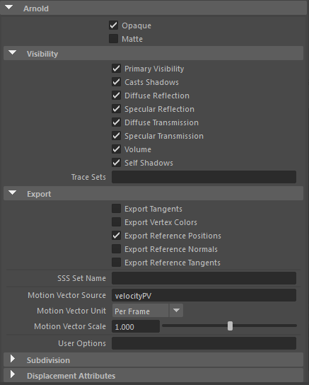
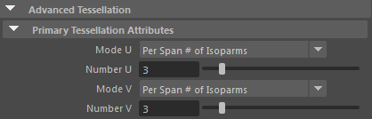
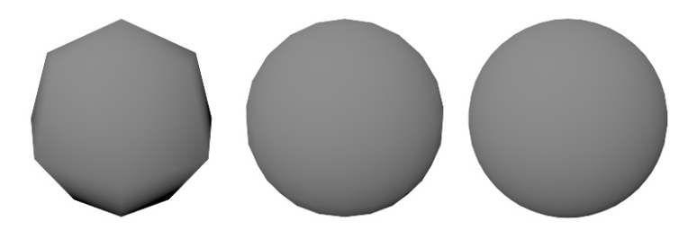

| 延伸阅读 |
|---|
| 有关 Arnold 形状和形状参数的完整文档，请参见《Arnold 用户手册》中的形状。 |
以下 Arnold 设置可通过属性编辑器用于 NURBS 曲面：

MtoA 依靠 Maya 来细分 NURBS，然后再将其作为多边形网格发送到 Arnold。MtoA 不支持简单的“简单细分选项”(Simple Tessellation Options)，但支持“高级细分”(Advanced Tessellation)下的“主细分属性”(Primary Tesselation Attributes)（请参见下图）：


每跨度等参线数： UV 1（左）、UV 3（中间）、UV 6（右）。